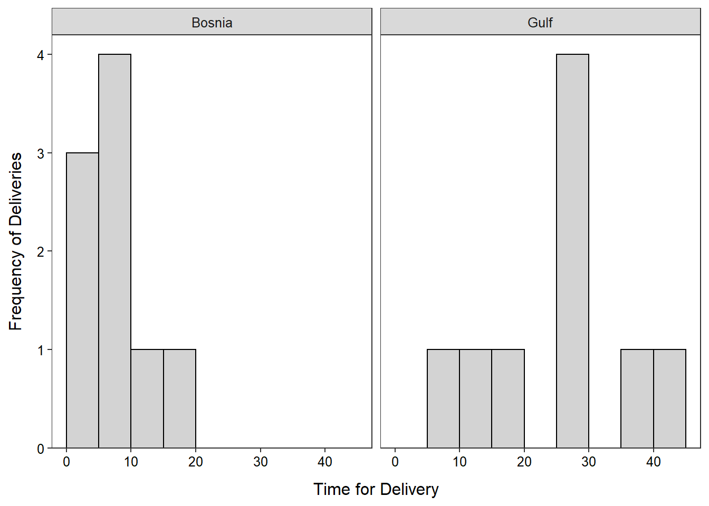

> d <- read.csv("pHlevels.csv")> ( ph.t <- t.test(ph$pH,mu=5.6,alt="less",conf.level=0.99) )One Sample t-test with ph$pH
t = -33.5303, df = 89, p-value < 2.2e-16
alternative hypothesis: true mean is less than 5.6
99 percent confidence interval:
-Inf 4.650103
sample estimates:
mean of x
4.577889 Warning in leveneTest.default(y = y, group = group, ...): group coerced to factor.> del <- read.csv("pHlevels.csv")> ggplot(data=del,mapping=aes(x=time)) +
geom_histogram(binwidth=5,boundary=0,color="black",fill="lightgray") +
labs(x="Time for Delivery",y="Frequency of Deliveries") +
scale_y_continuous(expand=expansion(mult=c(0,0.05))) +
theme_NCStats() +
facet_wrap(vars(war))
> (del.lev <- levenesTest(time~war,data=del) )Warning in leveneTest.default(y = y, group = group, ...): group coerced to factor.Levene's Test for Homogeneity of Variance (center = median)
Df F value Pr(>F)
group 1 3.6657 0.0736
16 > ( del.t <- t.test(time~war,data=del,var.equal=TRUE,alt="less") ) # mu=0 is a default Two Sample t-test with time by war
t = -4.8458, df = 16, p-value = 8.942e-05
alternative hypothesis: true difference in means is less than 0
95 percent confidence interval:
-Inf -11.57169
sample estimates:
mean in group Bosnia mean in group Gulf
7.155556 25.244444